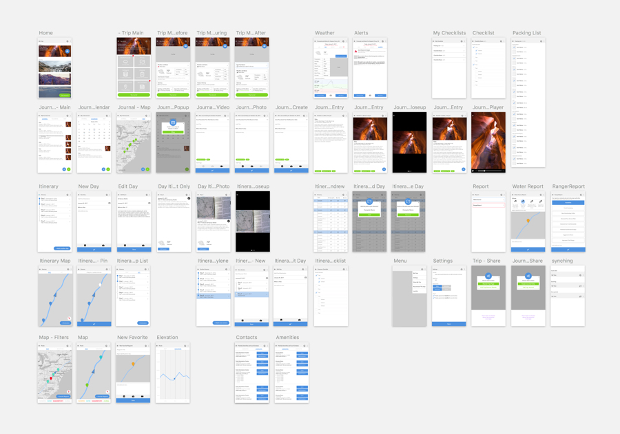
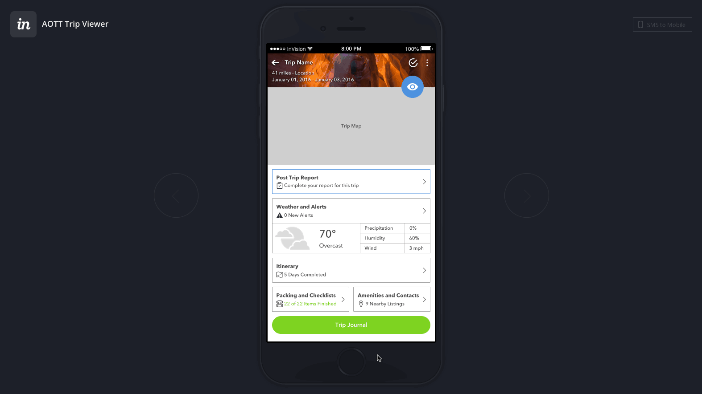
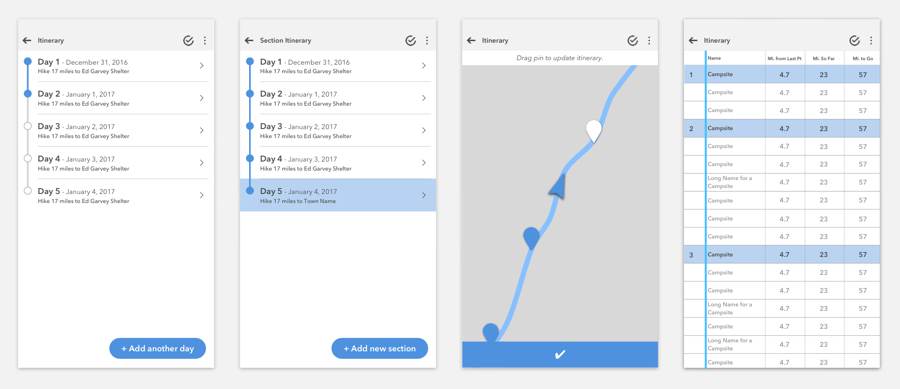
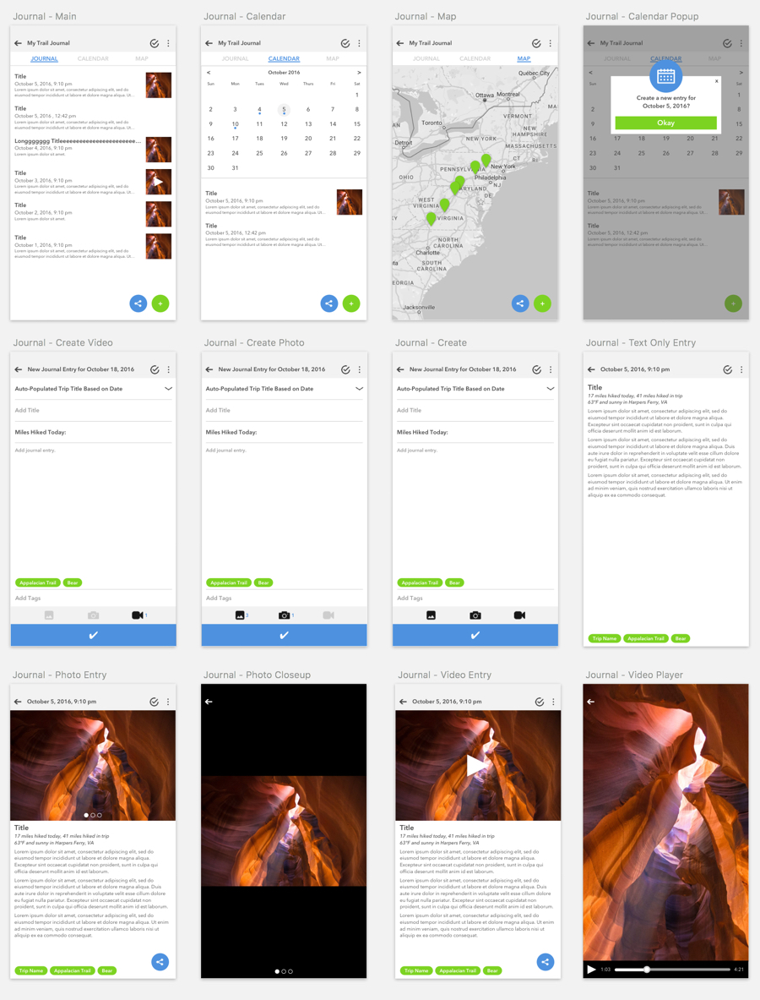

Problem: Backpackers are required to pack multiple printed and electronic resources to complete a trip safely
The trip planner web application was created as a simple, thorough tool for backpackers to plan safe trips. However, once on the trail, these backpackers had no way to benefit from the planning they did back home on their computer. People still needed to pack maps, elevation profiles, guidebooks, notebooks, and phones to be properly prepared for their trips.
I was tasked with creating a mobile application that translated the appropriate amount of information and resources over to a central mobile solution. This would ensure a substantial user payout during their trip.
Hypothesis: Backpackers would benefit from a comprehensive mobile experience on the trail
I went through each feature in the desktop application and gathered the ones that would be the most relevant on the trail. I left out information that was important to know beforehand, but became less valuable once a trip started. For example, whether or not pets are allowed on the trail is a good thing to know beforehand, but once you're on the trail pet-free, that information has already served it's purpose.
My strategy for what to focus on broke down into three areas:
- Things that helped make a safe trip: weather conditions, nearby contacts and amenities, and news alerts.
- Planning features that would be useful on mobile: packing list, other pre-trip checklists, and a limited version of the daily itinerary for on-the-go planning and reference.
- Per the original scope of the mobile app from the client, I included a journal within the app. Trip documentation is a common part of the hiking experience and our overarching mission for this project was to create a single, holistic solution under one roof.
User Feedback: Hiker mobile usage falls on a spectrum
With limited resources allocated for user research, the feedback for version 1.0 was light and informal. After connecting with ultralight backpackers on Reddit and receiving notes from a couple of team members, I discovered that on-trail mobile usage fell along a spectrum.
The primary reason experienced, ultralight backpackers tend to pack their phones is for safety. Preserving battery life is important so that the phone can be used in case of emergency. Offline experiences (whether accessible digitally via airplane mode or physically as printed out PDFs) were essential for this group. This group's approach to the app was as a last-resort reference to check unexpected weather conditions and other volatile characteristics of a hike. For them, if everything was going well, they saw no need for this app.
I also discovered -- from the ultralight group's feedback -- that the largest pain point that backpackers have is getting trustworthy information regarding water availability. Our app needed to provide a preliminary approach to solving that problem in order to provide the missing link to a holistic backpacker resource.
“REI hikers” were the term we gave less experienced hikers who had a tendency to do less planning beforehand. From talking with this group, I realized that our app would be a larger factor in the success of their experience. This group would rely on the features of our mobile app on a more daily basis compared to the experienced hikers.

Feature Edits: Important information needs to be the easiest to access
Below is how our initial hypothesis evolved based on user feedback:
Trip Main Page
- The initial version of this was merely a navigation step. I needed to create a greater, dashboard-style purpose.
- I created a feed for weather and alerts, allowing for immediate, at-a-glance access to the information that could impact their trip the most.
- I added a map view of the trail.
- I created more value around the daily itinerary preview based on whether it was being viewed before, during, or after the trip.
Map
- Because trail navigation is a central part of a backpacking trip, I included basic navigation support despite my initial intention to postpone it for a later iteration.
Weather Forecasts
- It became clear that, in the mind of a hiker, a weather forecast is a type of alert. I combined weather with alerts, creating a central place to access the most impactful information.
- I linked to specialized forecasts so users could easily navigate to snow and tide charts when applicable.
- I added a date picker so that the mobile app became useful for checking forecasts for longer trips.
News and Alerts
- I removed this feature because related articles did not pick up traction as an on-trail resource.
Packing and Checklists
- These features are only useful before a trip, so I grouped them to take up less space in the design.
Crowdsourcing
- My client wanted to include a way for users to report water and safety conditions. It was clear that water reporting was one of the most critical things backpackers want to know about, so crowdsouring became our way of addressing that in 1.0.
Syncing
- I had to add clear and simple cues for the user to understand the sync status with the web app.


Specific Challenge: Finding the right solution for itinerary planning
I received varied feedback concerning the process for planning each day’s itinerary. Although I created a very basic solution for 1.0, I needed to make sure it was the right foundation for future iteration. To narrow down the path daily itinerary planning would take, I started by building a prototype for each of the four different ideas that had surfaced in testing. The ideas were a bare bones planner, an incremental checkpoint planner, a map-based planner, and a planner based on a series of points on a spreadsheet. I embedded each idea within the main mobile project.
I am still collaborating with my client and the users in order to land on a solution that properly balances functionality for the widest group of use cases. If done the correct way, this feature has the potential to empower a larger range of backpackers. My hypothesis, based on prioritizing "REI hikers", is that text and map-based input will win out over the spreadsheet version.

Reflection: What I would do differently and future plans
- I am not content with the layout for the main trip page. I would like to collaborate with a UI designer to prioritize the layout's improvement and work together to establish a final visual design.
- Because the journaling component is such a large feature, I would remove it from this app and make it a stand alone entity. It would be more inviting to a wider range users -- including those are are not extensively planning their trips.
- I would also like to explore integrating the resource section of this app (our value proposition within the industry) with GaiaGPS. This would eliminate the burden of continuing to grow navigation functionality in-house. Since GaiaGPS is the best navigation app that hikers are already using, I believe integrating the value of our service into theirs would be a more seamless way to acquire an early user base and to introduce and grow our product within the industry.
- I also plan to expand the mobile planning functionality to cater to the “REI hiker” segment. Testing has shown that they are the most likely candidates to adopt the limited mobile functionality over the extended web application (which caters to experienced hikers). My current hypothesis is that the mobile app will be the primary resource for “REI hikers”, while the web app will continue to grow with ultralight backpacker-level users.